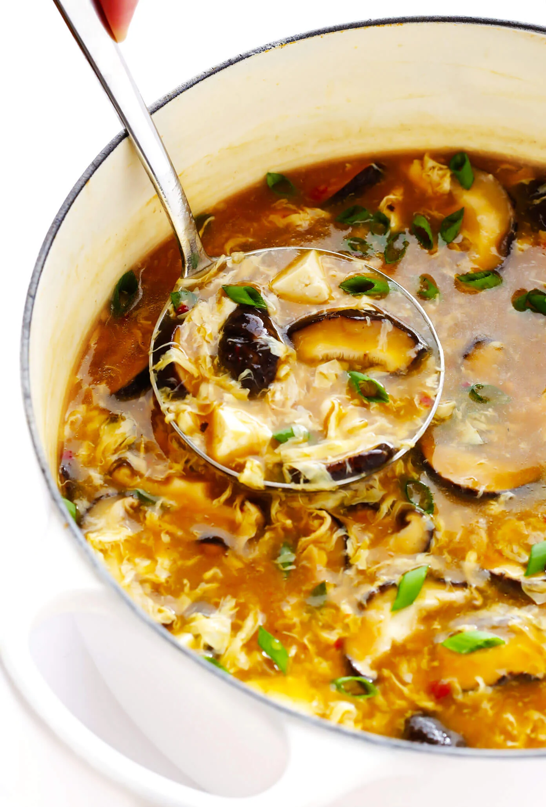

Kung Pao Chicken
Origin: Sichuan Source: Traditional Chinese Cuisine Category: Main Course
A fiery classic, Kung Pao Chicken is a combination of tender chicken pieces, crunchy peanuts, and spicy chilies, all coated in a delightful sauce.
Recipe Ingredients
- Chicken breast, diced
- Roasted peanuts
- Dried red chilies
- Garlic cloves, minced
- Ginger, minced
- Light soy sauce
- Dark soy sauce
- Rice vinegar
- Sesame oil
- Sugar
- Cornstarch
- Green onions, sliced
Recipe Steps
- Marinate chicken pieces in a mixture of light soy sauce, cornstarch, and a splash of water for 20 minutes.
- In a separate bowl, mix dark soy sauce, rice vinegar, sugar, and sesame oil to make the sauce. Set aside.
- In a wok, fry the dried chilies until aromatic but not burnt. Remove and set aside.
- In the same wok, stir-fry chicken until browned.
- Add minced garlic, ginger, and roasted peanuts. Stir well.
- Return the chilies to the wok. Pour in the sauce and mix until everything is well-coated.
- Garnish with green onions before serving.
Additional Food images
Egg Fried Rice
Origin: China Source: Everyday Chinese Meals Category: Side Dish
A staple in Chinese households, Egg Fried Rice is simple, delicious, and the perfect way to use up leftover rice.
Recipe Ingredients
- Day-old rice
- Eggs, beaten
- Green onions, finely chopped
- Peas
- Carrots, diced
- Soy sauce
- Sesame oil
- Salt and pepper
- Vegetable oil
Recipe Steps
- Heat oil in a wok or large pan. Add the eggs and scramble until just set. Remove and set aside.
- In the same wok, add more oil if needed. Stir-fry carrots and peas until tender.
- Add rice, making sure to break up any clumps.
- Stir in soy sauce, sesame oil, salt, and pepper. Mix well.
- Return the scrambled eggs to the wok, add green onions, and stir until well combined.
- Serve hot.
Additional Food images

Hot and Sour Soup
Origin: China Source: Traditional Chinese Soup Category: Soup A favorite in many Chinese restaurants, Hot and Sour Soup is tangy, spicy, and loaded with flavorful ingredients. It's a perfect appetizer or light meal, especially during colder weather.
Recipe Ingredients
- Chicken or vegetable broth
- Shiitake mushrooms, sliced
- Bamboo shoots, julienned
- Firm tofu, cubed
- Eggs, beaten
- Soy sauce
- White vinegar
- Chili oil or red pepper flakes
- White pepper powder
- Cornstarch (dissolved in water)
- Green onions, sliced
- Sesame oil
Recipe Steps
- In a large pot, bring the broth to a simmer over medium heat.
- Add shiitake mushrooms, bamboo shoots, and tofu. Let it simmer for about 5 minutes.
- Stir in soy sauce, white vinegar, chili oil or red pepper flakes, and white pepper. Mix well.
- While stirring the soup, slowly pour in the beaten eggs to create egg ribbons.
- Mix the cornstarch with water until smooth and then stir into the soup to thicken it.
- Simmer for another 2-3 minutes until the soup is thick and glossy.
- Remove from heat, stir in sesame oil, and garnish with sliced green onions.
- Serve hot.
Additional Food images
Beijing Duck (Peking Duck)
Origin: Beijing Source: Royal Chinese Cuisine Category: Main Course
Known for its crispy skin and tender meat, Beijing Duck is a renowned Chinese dish often served with thin pancakes and a sweet bean sauce.
Recipe Ingredients
- Whole duck
- Honey
- White vinegar
- Ginger
- Green onion
- Five-spice powder
- Salt
- Thin pancakes
- Sweet bean sauce
- Cucumber, julienned
Recipe Steps
- Clean the duck and remove any feathers.
- Prick the duck's skin all over, being careful not to pierce the meat.
- Boil water with honey, vinegar, and ginger. Pour over the duck to tighten the skin.
- Air-dry the duck for a few hours.
- Rub the duck inside and out with salt and five-spice powder.
- Roast in an oven or a dedicated duck roaster until golden and crispy.
- Carve the duck and serve with thin pancakes, sweet bean sauce, cucumber, and green onions.
Additional Food images

Mapo Tofu
Origin: Sichuan Source: Traditional Chinese Cuisine Category: Main Course
A spicy and aromatic dish, Mapo Tofu features soft tofu cubes in a fiery chili and bean paste sauce, often with minced meat like pork or beef.
Recipe Ingredients
- Firm tofu, cubed
- Minced pork or beef
- Garlic, minced
- Ginger, minced
- Green onions, sliced
- Doubanjiang (fermented bean paste)
- Chili oil or red pepper flakes
- Soy sauce
- Sichuan peppercorns, ground
- Chicken or vegetable broth
- Cornstarch (dissolved in water)
Recipe Steps
- Heat oil in a wok or pan. Fry the minced meat until browned.
- Add ginger, garlic, and doubanjiang. Stir-fry until aromatic.
- Add tofu cubes gently, so as not to break them.
- Pour in broth, soy sauce, chili oil, and ground Sichuan peppercorns.
- Simmer until the flavors meld together.
- Stir in cornstarch mixture to thicken the sauce.
- Top with sliced green onions and serve with steamed rice.